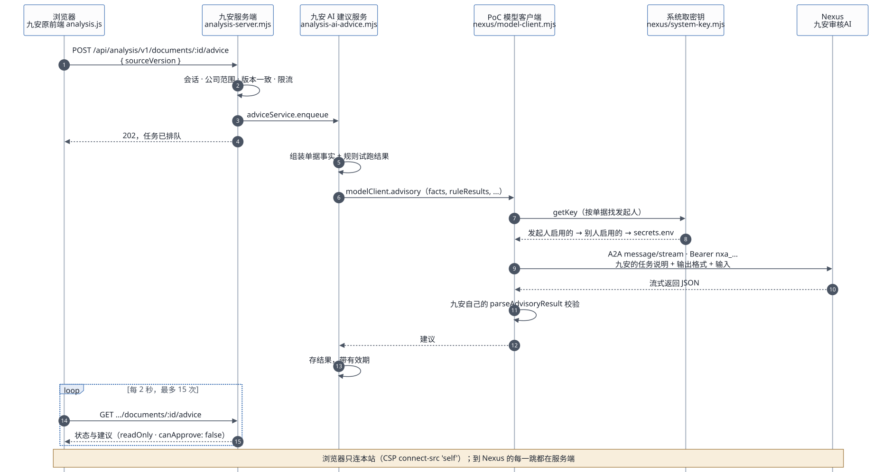

下文 J/ 指九安开发包的 code/
目录，P/ 指
audit-nexus/poc/app/。所有结论都在源码上逐行核对过；九安开发包只读，没有执行其中任何东西，也没有连过真实的汇联易。
1. 结论
- 汇联易：包里没有 MCP，也没有真实凭据。
只有一个连汇联易测试租户的 OAuth
客户端，地址写死。真实的 App ID 和 App Secret
要向九安申请（
先读我.md第 31 行）。九安同步完新单据之后，也不会自动发起 AI 建议。 - 九安原前端调 AI
走的都是九安原有的接口，前端一行没改。 有两个入口：「AI
独立建议」和「草稿原件核验」。到了「调模型」这一步，九安调的是注入进来的
modelClient；PoC 把它实现成 A2A，于是就调到了 Nexus 上的「九安审核AI」。 - 浏览器从不直接连 Nexus。 页面的 CSP 是
connect-src 'self'（P/http.mjs:5），浏览器只请求本站的/api/analysis/v1/*，到 Nexus 的每一跳都由服务端发出。页面上看得到 Nexus 的地址和发布编号，看不到任何密钥（第 3.3 节）。 - 两个模块之间只有 6 个接缝（第 4 节）：两个在服务端（路由钩子、模型客户端），一个协议（A2A），一份数据约定，一处前端补丁，一个导入口。任何一处变了，坏在哪、怎么发现，都写在第 4.2 节。
- 处理流程：汇联易同步 → 规范化 → 入库 → 读原件 → 九安预审 → AI 初审 → 人工复核。PoC 现在用「模拟来单」代替前三步。取单、入库是九安的事，Agent 不需要知道汇联易：它只接初审请求、按规则初审、回建议（第 6 节）。
2. 汇联易：源代码里有什么
| 项目 | 在哪 | 是什么 |
|---|---|---|
| 测试租户客户端 | J/ |
HuilianyiStageOAuthClient。地址写死：接口
https:/，取
Token …/。OAuth
client_：用 App ID 和 App Secret 换 Bearer
Token。构造参数只认
appId、appSecret、fetchImpl、timeoutMs，fetchImpl
可以换 |
| 客户端工厂 | J/ |
createHuilianyiReadClient(config,：从文件读凭据，只接受测试实例（instance: 'test'） |
| 凭据 | J/；J/ |
只有名字：hly-、hly-，由配置里的
source.、source.
指向挂载的文件。包里没有值，只有测试用的占位符 |
| 同步 | J/ |
createAnalysisSync：按 lastModifyDate
增量拉报销单列表和详情，每页 50 条，窗口之间重叠 10
分钟，每页写库一次（store.） |
| 同步窗口与调度 | J/；J/ |
窗口终点是「现在 − 5 分钟」，起点往前 24 小时；调度默认每 30 分钟一次 |
| MCP | 无 | 没有 MCP 服务端或客户端代码。只剩遗留：错误码
MCP_（J/）、来源版本字符串
huilianyi-（J/）和几处注释。生产走的
MCP 代理在这个测试包里被裁掉了 |
| 同步之后 | J/ |
只写库，不会自动读原件、预审或发起 AI
建议。九安的设计方案里写了「单据从汇联易同步进来后，自动开始基础预审与
AI 初审」（方案/
第 39 行），代码里还没有 |
3. 原前端怎么调到我们的 A2A Agent
3.1 九安原生的两个 AI 入口（前端不改）

AI 独立建议（单据详情页）：
前端
J/public/analysis.js:1722、1755的「AI 独立建议」面板：GET /api/analysis/v1/documents/:id/advice读状态，点「开始」时POST同一个地址，带sourceVersion。之后每 2 秒轮询，最多 15 次（J/public/analysis.js:356-357）。九安服务端
J/analysis-server.mjs:369-396：检查会话和公司范围；单据版本对不上就回 409；限流；然后adviceService.enqueue，回 202。返回之前再核一遍结果是只读的（readOnly: true、canApprove: false）。九安建议服务
J/src/analysis-ai-advice.mjs:220-236：组装单据事实和规则试跑结果，调modelClient.advisory({ facts, ruleResults, personalFocus: [], dataContext, signal })。这里接到 PoC。 模型客户端是九安组合根注入的（
J/src/analysis-runtime-services.mjs:60）；PoC 在P/server.mjs:45建好P/nexus/model-client.mjs，经P/poc-app.mjs:43交给九安。PoC 模型客户端：
- 先用九安自己的函数校验输入（
validateAdvisoryInput）； - 从系统里取调用密钥（
P/nexus/system-key.mjs：发起人在 Agent 页启用的那把 → 别的账号启用的 →secrets.env兜底）； - 把九安的任务说明
ADVISORY_TASK、输出格式ADVISORY_SCHEMA和输入拼成一条消息，经P/nexus/a2a-client.mjs用 A2Amessage/stream发给/a2a/pub_5c53e70d8dc7ddea； - 用九安自己的
parseAdvisoryResult校验返回（P/nexus/model-client.mjs:17-48）。
Nexus 回 401，只把用到的那一把密钥标记为失效。
- 先用九安自己的函数校验输入（
九安存下结果（带有效期），前端轮询拿到后显示，卡片上的「模型：」一栏是
nexus-a2a:<发布编号>（J/public/analysis.js:1553）。
草稿原件核验（规则库）：/api/analysis/v1/documents/:id/draft-evidence（J/analysis-server.mjs:399
起）→ draftEvidenceService →
modelClient.reviewDraftEvidence → 同一个模型客户端、同一条
A2A 路径。
3.2 PoC 加的入口
PoC 的接口都在 /api/analysis/v1/poc/*，挂在九安的
platformRoutes
钩子上（P/poc-app.mjs:82）。主机名、Origin、会话、CSRF
都由九安先检查完，才轮到 PoC。
| 页面上的位置 | 接口 | 服务端模块 | 怎么到 Nexus |
|---|---|---|---|
| 单据池顶上「模拟来单」 | GET /、POST / |
P/ |
生成单据 → 入库 → 读原件 →
runner.；之后同第 3.1 节第 3 步起 |
| 单据卡片和详情里的审批流 | GET /、GET/ |
P/、P/ |
后台先跑九安预审，再调九安的
adviceService.；同第 3.1 节第 3 步起 |
| Agent 页「我的 Nexus 连接」「我的 Agent」 | / |
P/、P/ |
列表：operator CLI 经 REST，用这个账号自己的 API 密钥；名片：公开的
/；启用：tasks/
验证密钥，不花钱 |
| Agent 页「调用测试」 | POST /、GET / |
P/ |
直接经 A2A 客户端；密钥先找「我启用的」，再找「系统提供的」 |
| 附件规则、示例附件 | /、/ |
P/、P/ |
不到 Nexus |
3.3 浏览器看得到什么、碰得到什么
| 内容 | 在哪 | |
|---|---|---|
| 看得到 | Nexus 域名和发布编号 | Agent 页的
a2a.（P/）；建议卡片上的模型名
nexus-（P/） |
| 看得到 | A2A 名片的内容、密钥的指纹 | Agent 页。名片本来就是公开的，读它不需要密钥 |
| 看不到 | 调用密钥、API 密钥、REGISTRY_ |
只在服务端：调用密钥加密存在账号目录里，API 密钥交给 CLI 保存，返回里只有指纹 |
| 碰不到 | Nexus 本身 | CSP
connect-：就算知道地址，页面脚本也发不出去 |
4. 两个模块怎么解耦
这里的两个模块是：
- 九安（宿主）：单据、规则、预审、AI 建议服务、原前端；
- PoC 的 Agent 模块（插件）：审批流、「我的 Nexus」、调用测试、A2A 模型客户端、前端扩展。

4.1 六个接缝
| # | 接缝 | 谁调谁 | 约定 | 两边各自假定什么 |
|---|---|---|---|---|
| ① | platformRoutes 钩子 |
九安服务端 → PoC 接口 | handle({ req,（J/） |
九安：先做完 Host、Origin、会话、CSRF。PoC：只认
/，别的路径回
false 交还九安 |
| ② | 模型客户端注入 | 九安建议服务 → PoC 模型客户端 | { model,，出错抛
AI_
错误码（J/） |
九安：不知道背后是 Nexus。PoC：不碰九安的存储，也不判审批，只把输入送出去、把输出交回来 |
| ③ | A2A 0.3 | PoC → Nexus | message/（SSE）+
Bearer nxa_；名片
/
公开；tasks/ 用来验证密钥 |
PoC：只用公开协议，不调 Nexus 内部接口。Nexus：不知道调用方是九安 |
| ④ | 数据约定 | 九安 → Agent（经 PoC 转交） | 每次请求都带九安的 ADVISORY_（任务说明）和
ADVISORY_（输出格式）；返回由九安自己的
parseAdvisoryResult 校验 |
Agent：不写死九安的格式，按请求里的说明回答。九安：只认自己校验通过的结果 |
| ⑤ | 前端锚点补丁 | PoC → 九安前端 | P/：每个补丁要求锚点文字恰好出现指定次数，九安原文件不动 |
九安前端：没有插件机制。PoC：新代码尽量放进独立文件（nexus-、nexus-、nexus-），补丁只做挂载 |
| ⑥ | 唯一的导入口 | PoC → 九安库函数 | 所有九安符号只从 P/
来，按 JIUAN_ 动态导入 |
PoC 其余文件不出现九安的路径；换九安版本只看这一个文件 |
此外还有两层解耦：
- PoC 插件之间：审批流、「我的
Nexus」、调用测试彼此不导入，只经组合根注入的函数打交道（
credentialFor、systemCredential、markInvalid）。 - 两个 Agent
之间：「九安审核AI」和「九安知识Agent」是两个发布、两把调用密钥，彼此不知道。审批流只绑定栈参数
NEXUS_ADVISORY_PUBLICATION指定的那个发布；知识 Agent 现在只在调用测试里用。
4.2 哪边变了，坏在哪、怎么发现
| 变化 | 影响 | 怎么发现 | 怎么改 |
|---|---|---|---|
九安改了 platformRoutes 的签名或调用位置 |
PoC 的接口全部 404 | P/、端到端测试 |
改组合根里的挂载几行 |
| 九安改了模型客户端合同（方法名、入参、错误码） | AI 建议失败，或者返回过不了校验 | P/、jiuan- |
改 model- 一个文件 |
| 九安改了任务说明或输出格式 | 不用改：每次请求都从九安取最新的，Agent 按请求里的说明回答 | 端到端测试看建议还能不能过校验 | 过不了时改审核 Agent 的提示词 |
| 九安前端改了锚点附近的代码 | 生成前端副本时直接报错，不会悄悄漏改 | build-、deploy.
第 2 步 |
按新代码重找锚点 |
九安改了内部函数名（jiuan. 里导入的） |
启动失败 | jiuan. |
改 jiuan. 一个文件 |
| Nexus 的 A2A 协议升级 | 调用或验证失败 | a2a-、端到端测试 |
改 a2a- 一个文件 |
| 换一个审核 Agent（换发布） | 无代码改动 | 健康检查之后跑 poc. |
改栈参数 NEXUS_，再
deploy. |
| 某一把调用密钥失效 | 只影响这一把：标记失效，下一次换下一把 | 运行记录里的 AI_ |
在 Agent 页「换密钥」 |
5. 处理流程：从汇联易到人工复核

| 步骤 | 九安生产（代码里有的） | PoC 现在 |
|---|---|---|
| 1 取单 | createAnalysisSync 按 lastModifyDate
增量拉汇联易测试租户的报销单列表和详情 |
「模拟来单」按模板生成虚构单据（P/）；测试台上编号从九安的键值状态里取（poc-），重启接着排 |
| 2 规范化 | normalizeAnalysisReport |
同一个函数（P/） |
| 3 入库 | store.（MySQL，同一个事务里比较版本） |
测试台（2026-10-19 起）：照九安同步的写法 createBatch →
upsertPage → updateBatch 写进九安的 MySQL
存储（P/）；内存模式仍是
memory-（P/） |
| 4 触发 | 没有：要有人在详情页点「AI 独立建议」 | 入库后直接
runner.，系统自动发起（P/） |
| 5 读原件 | evidenceService. |
同一个服务，原件内容由 PoC
的桩返回；测试台上来单原文存在九安的键值状态里（poc-），重启后还能读 |
| 6 预审 | 基础检查 + 规则试跑（规则现在是空的，见客户规则与 AI 初审） | 同一个服务 |
| 7 AI 初审 | 第 3.1 节的调用链 | 同一条调用链；失败隔 5 秒自动重试一次，再失败停在「AI 初审失败」 |
| 8 显示 | 详情页「AI 独立建议」面板 | 另外在单据池卡片上显示「AI 初审：结论 · 风险」，进行中的每 4 秒刷新 |
| 9 人工复核 | 九安不做审批（只读优先） | 一位复核人通过或退回，只记在应用里，不回写 |
6. Agent 只管初审，不碰汇联易
不做「模拟汇联易」。来单、同步、入库都是九安自己的事；Agent 只需要：
- 接到一次初审请求（单据事实 + 已发布的规则 + 规则引擎的结果）；
- 认出这张单据该适用哪些规则，逐条初判，再综合给出建议；
- 回复建议，报告这次调用是成功还是失败；
- 九安据此把审批推进到「待人工复核」。
九安开发者怎么用补丁和接口描述文件把审批工作流接到 Agent 上，见Agent 接入框架：架构、工作流与交付接口、Agent 接口：jiuan.agent/v1和第一个任务单据初审。